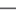

CERC 2011 Final Standings
| Place | Team | Total time | Problems solved | In sum | Home |
|---|---|---|---|---|---|
| 1. | cteam02 - PL UW: Tomasz Kulczynski, Jakub Pachocki, Wojciech Smietanka | 22:45:35 |  |
(9 accepted) | cteam02.zip |
| 2. | cteam54 - PL UJ: Robert Obryk, Adam Polak, Maciej Wawro | 17:49:44 | (8 accepted) | cteam54.zip | |
| 3. | cteam11 - PL UJ: Jakub Adamek, Grzegorz Guspiel, Jonasz Pamula | 10:31:12 | (7 accepted) | cteam11.zip | |
| 4. | cteam16 - PL UW: Adam Karczmarz, Maciej Klimek, Tomasz Kociumaka | 14:52:39 | (7 accepted) | cteam16.zip | |
| 5. | cteam09 - CZ CUNI: Michal Danilak, Filip Hlasek, Jakub Zika | 16:29:28 | (7 accepted) | cteam09.zip | |
| 6. | cteam20 - PL UWr: Marcin Dublanski, Jaroslaw Gomulka, Karol Pokorski | 20:28:04 | (7 accepted) | cteam20.zip | |
| 7. | cteam14 - SK CU: Vladimir Boza, Peter Fulla, Jan Hozza | 20:50:30 | (7 accepted) | cteam14.zip | |
| 8. | cteam05 - HR UZ: Stjepan Glavina, Ivan Katanic, Goran Zuzic | 09:14:03 | (6 accepted) | cteam05.zip | |
| 9. | cteam25 - SK CU: Tomas Belan, Peter Herman, Martin Sramek | 10:12:44 | (6 accepted) | cteam25.zip | |
| 10. | cteam08 - HU ELTE: Attila Janos Dankovics, Gergely Gabor Nagy, Balazs Szalkai | 12:36:35 | (6 accepted) | cteam08.zip | |
| 11. | cteam18 - HU BMU: Andras Eisenberger, Istvan Lam, Szilveszter Szebeni | 14:24:10 | (6 accepted) | cteam18.zip | |
| 12. | cteam07 - PL UWr: Anna Piekarska, Damian Straszak, Jakub Tarnawski | 14:46:51 | (6 accepted) | cteam07.zip | |
| 13. | cteam55 - SL ULJ: Jan Bercic, Tomaz Hocevar, Klemen Kloboves | 15:35:11 | (6 accepted) | cteam55.zip | |
| 14. | cteam26 - PL UJ: Wojciech Bukowicki, Przemyslaw Derengowski, Maciej Gawron | 15:36:23 | (6 accepted) | cteam26.zip | |
| 15. | cteam42 - PL UWr: Krzysztof Piecuch, Damian Rusak, Lukasz Zatorski | 19:37:51 | (6 accepted) | cteam42.zip | |
| 16. | cteam45 - SK UPJS: Maria Harcarufkova, Jan Jergus, Matej Kopernicky | 05:38:49 | (5 accepted) | cteam45.zip | |
| 17. | cteam57 - PL UWr: Wiktor Janas, Karol Konaszynski, Adam Kunysz | 05:40:49 | (5 accepted) | cteam57.zip | |
| 18. | cteam28 - CZ MUNI: David Klaska, Marek Klucar, Petr Pilar | 06:05:52 | (5 accepted) | cteam28.zip | |
| 19. | cteam22 - PL UW: Boleslaw Kulbabinski, Miroslaw Michalski, Jakub Ocwieja | 08:46:31 | (5 accepted) | cteam22.zip | |
| 20. | cteam40 - CZ CUNI: Vlastimil Dort, Karel Tesar, Pavel Vesely | 09:11:22 | (5 accepted) | cteam40.zip | |
| 21. | cteam23 - HR UZ: Ivica Kicic, Adrian Satja Kurdija, Gustav Matula | 09:24:22 | (5 accepted) | cteam23.zip | |
| 22. | cteam32 - PL AGH: Szymon Gut, Adam Obuchowicz, Martyna Walaszewska | 09:57:11 | (5 accepted) | cteam32.zip | |
| 23. | cteam30 - PL PUT: Konrad Baumgart, Piotr Zurkowski, Tomasz Zurkowski | 10:21:25 | (5 accepted) | cteam30.zip | |
| 24. | cteam04 - SL ULJ: Matej Aleksandrov, Ziga Ham, Nace Hudobivnik | 11:59:24 | (5 accepted) | cteam04.zip | |
| 25. | cteam44 - PL UAM: Lukasz Kalinowski, Piotr Zdanowicz, Patryk Zywica | 12:01:12 | (5 accepted) | cteam44.zip | |
| 26. | cteam29 - HU BMU: Attila Jambor, Zoltan Martonka, Tamas Peregi | 12:42:58 | (5 accepted) | cteam29.zip | |
| 27. | cteam64 - CZ MUNI: Ondrej Bouda, Tomas Kotula, Zuzana Petruchova | 14:17:36 | (5 accepted) | cteam64.zip | |
| 28. | cteam50 - PL UW: Adrian Jaskolka, Krzysztof Leszczynski, Jan Kanty Milczek | 14:18:16 | (5 accepted) | cteam50.zip | |
| 29. | cteam41 - HU ELTE: Zoltan Gilian, Balazs Kezes, Thier Richard | 15:53:28 | (5 accepted) | cteam41.zip | |
| 30. | cteam65 - PL PUT: Artur Dwornik, Bartosz Koninski, Lukasz Krakowiak | 21:22:51 | (5 accepted) | cteam65.zip | |
| 31. | cteam06 - SK STU: Jakub Kriz, Ondrej Proksa, Marius Sajgalik | 08:59:19 | (4 accepted) | cteam06.zip | |
| 32. | cteam19 - SK UNIZA: Jakub Berthoty, Milos Korenciak, Miroslav Kvassay | 11:56:40 | (4 accepted) | cteam19.zip | |
| 33. | cteam39 - PL WWSI: Maciej Boniecki, Piotr Nowak, Tomasz Nowakowski | 12:32:17 | (4 accepted) | cteam39.zip | |
| 34. | cteam21 - CZ CTU: Petr Kubista, Ondrej Kuzela, David Zalesky | 12:39:21 | (4 accepted) | cteam21.zip | |
| 35. | cteam60 - CZ CUNI: Oskar Hybl, Oskar Maxa, Vojtech Vondra | 13:27:14 | (4 accepted) | cteam60.zip | |
| 36. | cteam56 - CZ CTU: Martin Hanak, Martin Ovesny, Ales Podskalsky | 13:33:10 | (4 accepted) | cteam56.zip | |
| 37. | cteam52 - HU US: Andras Fabian, Zita Godo, Melinda Katona | 02:33:39 | (3 accepted) | cteam52.zip | |
| 38. | cteam35 - PL SUT: Rafal Rychcicki, Piotr Adam Skotnicki, Tomasz Wojdyla | 04:14:17 | (3 accepted) | cteam35.zip | |
| 39. | cteam58 - SK CU: Ladislav Baco, Michal Petrucha, Marek Spano | 04:15:22 | (3 accepted) | cteam58.zip | |
| 40. | cteam31 - SK UMB: Martin Brzula, Tomas Janikovic, Michal Povinsky | 05:49:30 | (3 accepted) | cteam31.zip | |
| 41. | cteam17 - CZ CTU: Radek Holy, Pavel Skala, Tomas Tunys | 06:18:23 | (3 accepted) | cteam17.zip | |
| 42. | cteam33 - CZ ZCU: Zuzana Buresova, Petr Kellnhofer, Jakub Vit | 07:03:34 | (3 accepted) | cteam33.zip | |
| 43. | cteam61 - PL UMK: Damian Kurpiewski, Anna Majka, Andrzej Zakrzewski | 07:27:21 | (3 accepted) | cteam61.zip | |
| 44. | cteam37 - HU US: Denes Almasi, Gabor Danner, Janos Gub | 08:47:32 | (3 accepted) | cteam37.zip | |
| 45. | cteam53 - SK UMB: Miroslav Dzurik, Stanislav Herman, Michal Krnac | 08:59:52 | (3 accepted) | cteam53.zip | |
| 46. | cteam24 - HU UD: Zsolt Gyongyosi, Pushinsky Viktor, Szabo Tamas | 11:48:18 | (3 accepted) | cteam24.zip | |
| 47. | cteam63 - PL WUT: Adam Mizerski, Bartosz Stalewski, Jan Stepien | 12:44:16 | (3 accepted) | cteam63.zip | |
| 48. | cteam62 - CZ VSB: Jakub Gerlich, Lukas Maly, Ondrej Zjevik | 01:11:26 | (2 accepted) | cteam62.zip | |
| 49. | cteam10 - SL UniMB: Aleksander Kelenc, Tim Kos, Matej Kren | 02:46:38 | (2 accepted) | cteam10.zip | |
| 50. | cteam01 - CZ CTU: Michael Blaha, Jan Bradac, Radek Tomsu | 02:54:23 | (2 accepted) | cteam01.zip | |
| 51. | cteam46 - PL OPOLE: Jadwiga Krawczyk, Przemyslaw Perkowski, Damian Wilk | 03:26:43 | (2 accepted) | cteam46.zip | |
| 52. | cteam13 - HU UD: Mate Agocs, Maziar Amini Zanjani, Kruppa Kinga | 03:41:23 | (2 accepted) | cteam13.zip | |
| 53. | cteam43 - SK STU: Lubos Demovic, Peter Kmec, Ondrej Kuzmik | 03:49:13 | (2 accepted) | cteam43.zip | |
| 54. | cteam15 - PL OPOLE: Dawid Garczarek, Szymon Harenczuk, Michal Piwowarski | 04:01:23 | (2 accepted) | cteam15.zip | |
| 55. | cteam38 - SK UNIZA: Martin Bulik, Stanislav Galfy, Matus Hovanec | 04:15:34 | (2 accepted) | cteam38.zip | |
| 56. | cteam03 - HU BMU: Denes Berecz, Tamas Gonczi, Balazs Tringel | 05:00:24 | (2 accepted) | cteam03.zip | |
| 57. | cteam34 - HU PPKE: Gergo Bohner, Andras Laszloffy, Szilard Szalai | 06:50:35 | (2 accepted) | cteam34.zip | |
| 58. | cteam51 - CZ ZCU: Jan Ambroz, Martin Blaha, Antonin Neumann | 07:01:53 | (2 accepted) | cteam51.zip | |
| 59. | cteam12 - CZ ZCU: Jan Moulis, Vaclav Rajtmajer, Kamil Rendl | 08:24:20 | (2 accepted) | cteam12.zip | |
| 60. | cteam27 - SL ULJ: Anze Pecar, Matic Potocnik, Miha Zidar | 00:16:39 | (1 accepted) | cteam27.zip | |
| 61. | cteam36 - CZ VSB: Hamid Khairy, Elena Lavlinskaya, David Macek | 00:31:20 | (1 accepted) | cteam36.zip | |
| 62. | cteam59 - PL SUT: Tomasz Grynfelder, Piotr Pacewicz, Anton Smolinski | 00:54:56 | (1 accepted) | cteam59.zip | |
| 63. | cteam47 - SL UPR: Simon Mezgec, Dusko Topic, Aleksandar Tosic | 02:33:06 | (1 accepted) | cteam47.zip | |
| 64. | cteam66 - CZ ZCU: David Steinberger, Vaclav Stengl, Jan Strnadek | 00:00:00 | (0 accepted) | cteam66.zip |